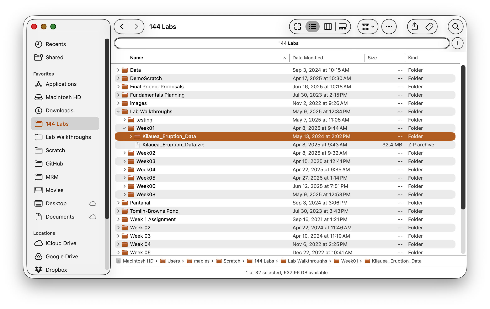
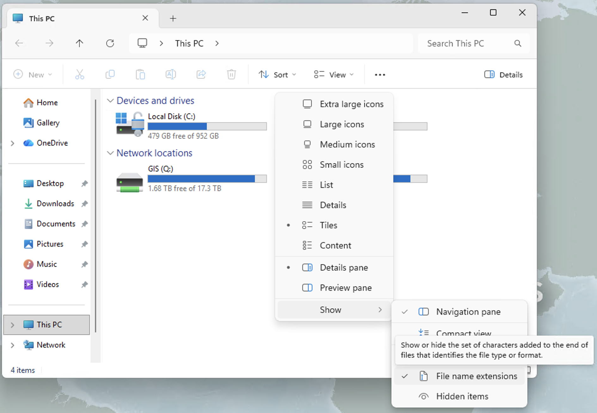
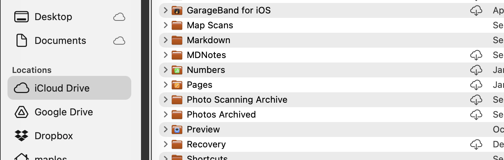

Things You Need to Know About Your Computer
Introduction
Before we dive into spatial data science, it's crucial to establish good computer management practices. This lab will teach you essential skills for organizing your digital workspace, managing files effectively, and avoiding common pitfalls that can derail your coursework.
Learning Objectives
By the end of this lab, you will be able to:
- Implement effective data management strategies
- Understand file directory systems and safe storage locations
- Work confidently with compressed files and extraction
- Avoid common file management problems that plague GIS users
Data Management and File Directory Systems
Effective data management is the foundation of successful spatial data science work. Understanding how your operating system organizes files and directories is crucial for avoiding lost work, confusion, and technical problems.
Understanding File Directory Systems
File directory systems organize your files in a hierarchical tree structure. Each operating system handles this differently, and understanding these differences is essential for effective file management.
macOS File System Structure
Root Directory:
- macOS uses a Unix-based file system starting with the root directory
/ - User files are typically stored under
/Users/[username]/ - Applications are stored in
/Applications/
Common User Directories:
- Desktop:
/Users/[username]/Desktop/ - Documents:
/Users/[username]/Documents/ - Downloads:
/Users/[username]/Downloads/ - Home Directory:
/Users/[username]/(also referred to as~)
Path Format:
- macOS uses forward slashes
/to separate directories - Example:
/Users/jsmith/Documents/Earthsys144/Week01/data.shp
Showing Full Paths in Finder:
- Open Finder
- Go to View → Show Path Bar (this shows the path at the bottom of the window)
- Alternative: View → Show Status Bar and then View → Customize Toolbar and add the Path button
- For copying paths: Right-click any file and hold the Option key to see "Copy [filename] as Pathname"

Windows File System Structure
Drive Letters:
- Windows uses drive letters (C:, D:, E:) as the root of each storage device
- The main system drive is typically
C: - External drives get assigned subsequent letters
Common User Directories:
- Desktop:
C:\Users\[username]\Desktop\ - Documents:
C:\Users\[username]\Documents\ - Downloads:
C:\Users\[username]\Downloads\ - User Profile:
C:\Users\[username]\
Path Format:
- Windows uses backslashes
\to separate directories - Example:
C:\Users\JSmith\Documents\Earthsys144\Week01\data.shp
Showing Full Paths in File Explorer:
- Open File Explorer
- Click the View tab in the ribbon
- Check the box for File name extensions (to see .shp, .csv, etc.)
- For the address bar: Click View → Options → View tab → Display the full path in the title bar
- Alternative: Click in the address bar (where it shows folder icons) and it will switch to text showing the full path
- Copy path method: Hold Shift and right-click any file, then select "Copy as path"

Where NOT to Put Things (Critical - Read This First!)
WARNING: Choosing the wrong location for your GIS files can lead to data corruption, software crashes, and lost work. These locations MUST be avoided:
Cloud Sync Folders (Critical Warning)

Problematic Locations:
- macOS:
~/Desktop/,~/Documents/if iCloud is enabled - Windows:
C:\Users\[username]\OneDrive\or Dropbox folders - Any folder with a cloud sync icon
Why These Cause Problems:
Modern cloud storage services like iCloud, OneDrive, and Dropbox use "storage optimization" features that automatically move large files to the cloud to save local disk space. While this seems helpful, it creates serious problems for GIS software:
Storage Optimization Issues:
- Files appear present but aren't actually local: Cloud services show file icons and names, but the actual data is stored remotely
- On-demand downloading: When QGIS tries to access a file, the cloud service must first download it, causing delays and potential timeouts
- Incomplete downloads: If your internet connection is slow or interrupted, QGIS may try to read a partially downloaded file, causing corruption or crashes
- "File not found" errors: QGIS may report that files don't exist when they're actually just not downloaded locally
Additional Problems:
- Cloud services lock files while syncing, preventing GIS software access
- Sync conflicts can corrupt spatial data files, especially multi-file formats like Shapefiles
- Large spatial datasets may exceed storage quotas
- GIS software creates temporary files during processing that confuse sync services
- Multiple files (like .shp, .shx, .dbf) may sync at different times, breaking dataset integrity
Solutions:
- macOS: Turn off iCloud sync for Desktop and Documents in System Preferences → Apple ID → iCloud, or create your course folder outside synced areas like
/Users/[username]/Local_GIS/ - Windows: Work outside OneDrive folders - create
C:\GIS_Projects\or useC:\Users\[username]\Local_GIS\instead - Universal approach: Create a dedicated non-synced folder for all GIS work, then manually backup completed projects to cloud storage
- If you must use cloud folders: Ensure "Keep on this device" or "Always available offline" is enabled for your GIS data folders
Other Locations to Avoid
System Folders:
- Never store data in
/Applications/(macOS) orC:\Program Files\(Windows) - Avoid the root directory (
/orC:\) - Don't use system folders like
/tmp/orC:\Windows\Temp\
Network Drives:
- Avoid storing active projects on network drives when possible
- Network interruptions can corrupt data
- Performance is often slower than local storage
Where to Put Things (Safe Locations)
Now that you know where NOT to store your files, here are the recommended safe locations and organization strategies:
Recommended Course Structure:
Earthsys144/ # Main course folder
├── Week00/ # Week-specific folders
│ ├── data/ # Original and final data only
│ ├── working/ # Intermediate processing files
│ ├── exports/ # Screenshots, PDFs, final outputs
│ └── Week00_Lab01.qgz # QGIS project file
├── Week01/
│ ├── data/
│ ├── working/
│ ├── exports/
│ └── Week01_Lab01.qgz # Descriptive project naming
└── Week02/
├── data/
├── working/
├── exports/
└── Week02_Lab01.qgz # Week and lab specific
Understanding Project Files vs. Data:
QGIS Project Files (.qgz):
- Small file size (typically < 1MB) - contains NO actual data
- Contains only references (file paths) to your data files
- Stores visualization instructions: colors, symbols, layer order
- Stores analysis instructions: tool settings, relationships between layers
- Easy to share and backup due to small size
Folder Organization Strategy:
/data/ folder:
- Original datasets as downloaded (never modify these!)
- Final cleaned datasets ready for analysis
- Can become very large (hundreds of MB to GB)
- Keep it simple - avoid too many intermediate versions here
/working/ folder:
- Intermediate processing files created during analysis
- Temporary outputs from geoprocessing tools
- Experimental datasets you're testing
- Can be deleted periodically to save space
/exports/ folder:
- Screenshots for homework and documentation
- PDF maps and layouts for submission
- Exported final results (charts, simplified datasets)
- Presentation materials
Best Practices:
- Create this structure in a non-synced location (see section 1.2.1 above)
- Recommended locations:
- macOS:
/Users/[username]/Local_GIS/or/Users/[username]/GIS_Projects/ - Windows:
C:\GIS_Projects\orC:\Users\[username]\Local_GIS\
- macOS:
- Keep project files at the week level - they reference all folder contents
- Use descriptive filenames without spaces (underscores or hyphens instead)
- Clean out
/working/folders periodically to save disk space - Back up
/data/and/exports/regularly -/working/can be recreated if needed
Unzipping Files
Spatial data is often distributed in compressed formats (.zip, .tar.gz, .7z), and how you handle these files differs significantly between operating systems. Understanding these differences is crucial for GIS work.
macOS Behavior (Recommended)
What happens when you double-click a .zip file:
- macOS automatically extracts the contents to a new folder
- Creates a folder with the same name as the zip file (minus .zip extension)
- Deletes the original .zip file by default
- Files are immediately available for full read/write access
Benefits for GIS work:
- Files are fully extracted and accessible to QGIS
- Can edit, modify, and add fields to datasets
- No performance issues or access restrictions
- Works seamlessly with all GIS software
Windows Behavior (Problematic for GIS)
What happens when you double-click a .zip file:
- Windows treats the zip file as a folder that can be browsed
- Files appear to be accessible but are still compressed
- You can view files but they're not truly extracted
- The original .zip file remains intact
Why this causes GIS problems:
- Limited access: QGIS cannot fully access compressed files
- Cannot edit: Unable to add fields, modify attributes, or edit geometries
- Performance issues: Reading from compressed files is slower
- Incomplete operations: Some geoprocessing tools will fail
- File locking: Multiple software packages may conflict when accessing compressed files
Windows users must manually extract:
- Right-click the .zip file
- Select "Extract All..." (not just double-click)
- Choose a destination folder
- Click "Extract" to fully uncompress files
Universal Best Practices
For all operating systems:
- Always fully extract compressed files before using in GIS software
- Extract to your
/data/folder within your week directory - Verify extraction: Check that all expected files are present
- Organize immediately: Move extracted files to appropriate subfolders
- Keep original downloads: Save original .zip files in a separate
/downloads/folder for backup
Common compressed formats in GIS:
- .zip: Most common for shapefiles and small datasets
- .tar.gz: Common for large raster datasets and Linux distributions
- .7z: High compression format, requires 7-Zip software
- .rar: Less common, requires WinRAR or similar software
Extraction verification checklist:
- Shapefiles should have multiple files (.shp, .shx, .dbf, .prj)
- File sizes should be reasonable (not 0 bytes)
- Files should open properly in QGIS without errors
- You should be able to view attribute tables completely